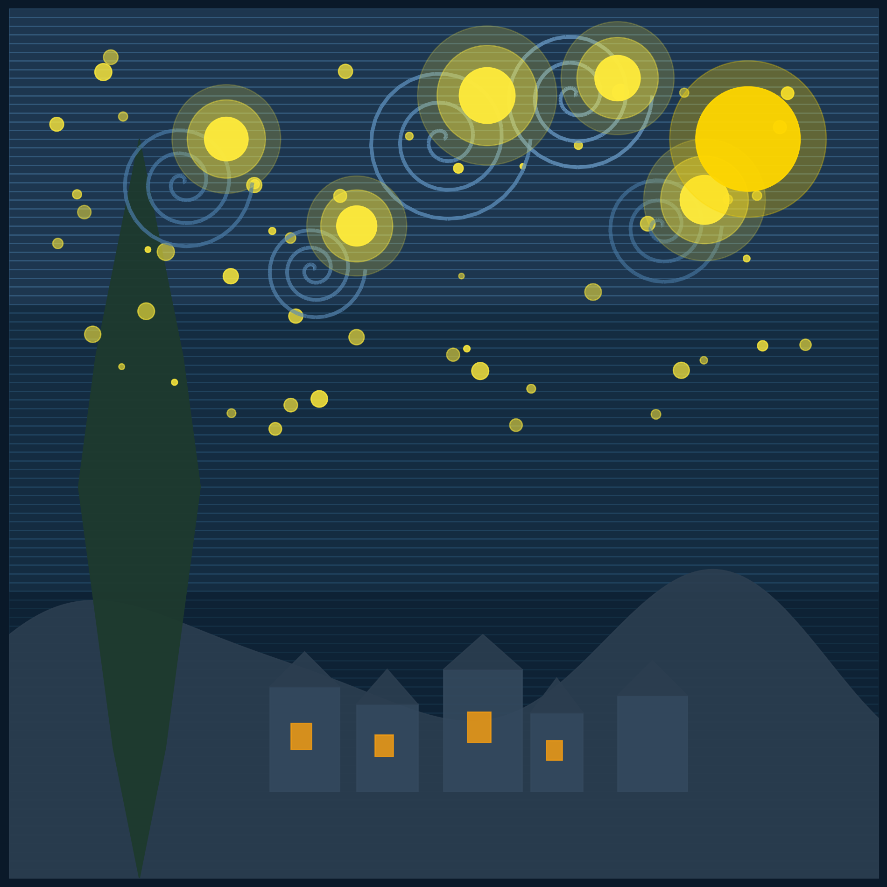

import numpy as np
import matplotlib.pyplot as plt
from matplotlib.patches import Circle, Rectangle
from matplotlib.collections import LineCollection
# Configurar la figura
fig, ax = plt.subplots(figsize=(14, 10), facecolor='#0a1929')
ax.set_xlim(0, 100)
ax.set_ylim(0, 100)
ax.set_aspect('equal')
ax.axis('off')
fig.patch.set_facecolor('#0a1929')
# Colores inspirados en Van Gogh
color_cielo_oscuro = '#1a3a52'
color_cielo_medio = '#2d5a7b'
color_cielo_claro = '#4a7ba7'
color_estrella = '#ffeb3b'
color_luna = '#ffd700'
color_montanas = '#2c3e50'
color_pueblo = '#34495e'
color_cipres = '#1e3a2e'
color_ventanas = '#f39c12'
# Fondo del cielo con gradiente
gradient_colors = [color_cielo_oscuro, color_cielo_medio, color_cielo_claro]
for i in range(100):
y_pos = i
color_index = int(i / 33)
if color_index >= len(gradient_colors):
color_index = len(gradient_colors) - 1
ax.add_patch(Rectangle((0, y_pos), 100, 1,
color=gradient_colors[color_index],
alpha=0.3))
# Función para crear espirales (remolinos de Van Gogh)
def crear_espiral(cx, cy, radio, n_puntos=100, vueltas=3):
theta = np.linspace(0, vueltas * 2 * np.pi, n_puntos)
r = np.linspace(0, radio, n_puntos)
x = cx + r * np.cos(theta)
y = cy + r * np.sin(theta)
return x, y
# Crear múltiples espirales en el cielo con diferentes intensidades
posiciones_espirales = [
(20, 80, 8, '#4a7ba7', 0.7),
(50, 85, 10, '#5a8bb7', 0.8),
(75, 75, 7, '#4a7ba7', 0.6),
(35, 70, 6, '#5a8bb7', 0.65),
(65, 90, 9, '#6a9bc7', 0.75),
]
for cx, cy, radio, color, alpha in posiciones_espirales:
x, y = crear_espiral(cx, cy, radio)
points = np.array([x, y]).T.reshape(-1, 1, 2)
segments = np.concatenate([points[:-1], points[1:]], axis=1)
lc = LineCollection(segments, colors=color, linewidths=3, alpha=alpha)
ax.add_collection(lc)
# Montañas onduladas
x_montana = np.linspace(0, 100, 200)
y_montana = 25 + 8 * np.sin(x_montana * 0.1) + 3 * np.cos(x_montana * 0.15)
ax.fill_between(x_montana, 0, y_montana, color=color_montanas, alpha=0.9)
# Ciprés ondulante (árbol característico)
cipres_x = np.array([15, 12, 10, 8, 10, 12, 15, 18, 20, 22, 20, 18])
cipres_y = np.array([0, 15, 30, 45, 60, 70, 85, 70, 60, 45, 30, 15])
ax.fill(cipres_x, cipres_y, color=color_cipres, alpha=0.95)
# Pueblo con casitas
casas = [
(30, 10, 8, 12),
(40, 10, 7, 10),
(50, 10, 9, 14),
(60, 10, 6, 9),
(70, 10, 8, 11),
]
np.random.seed(42)
for x, y, w, h in casas:
# Casa
ax.add_patch(Rectangle((x, y), w, h, color=color_pueblo, alpha=0.9))
# Techo triangular
techo_x = [x, x + w/2, x + w]
techo_y = [y + h, y + h + 4, y + h]
ax.fill(techo_x, techo_y, color=color_montanas, alpha=0.9)
# Ventanas iluminadas
if np.random.random() > 0.3:
ax.add_patch(Rectangle((x + w*0.3, y + h*0.4), w*0.3, h*0.25,
color=color_ventanas, alpha=0.85))
# Luna grande con halo
ax.add_patch(Circle((85, 85), 9, color=color_luna, alpha=0.3, zorder=9))
ax.add_patch(Circle((85, 85), 6, color=color_luna, alpha=0.95, zorder=10))
# Estrellas grandes con halos
posiciones_estrellas = [
(25, 85, 2.5),
(55, 90, 3.2),
(80, 78, 2.8),
(40, 75, 2.3),
(70, 92, 2.6),
]
for x, y, r in posiciones_estrellas:
# Halo exterior
ax.add_patch(Circle((x, y), r*2.5, color=color_estrella, alpha=0.2, zorder=5))
# Halo medio
ax.add_patch(Circle((x, y), r*1.8, color=color_estrella, alpha=0.4, zorder=6))
# Estrella central
ax.add_patch(Circle((x, y), r, color=color_estrella, alpha=0.95, zorder=7))
# Estrellas pequeñas con variación de tamaño y brillo
np.random.seed(42)
for i in range(50):
x = np.random.uniform(5, 95)
y = np.random.uniform(50, 95)
r = np.random.uniform(0.3, 1.0)
alpha = np.random.uniform(0.5, 0.9)
ax.add_patch(Circle((x, y), r, color=color_estrella, alpha=alpha))
plt.tight_layout()
plt.show()